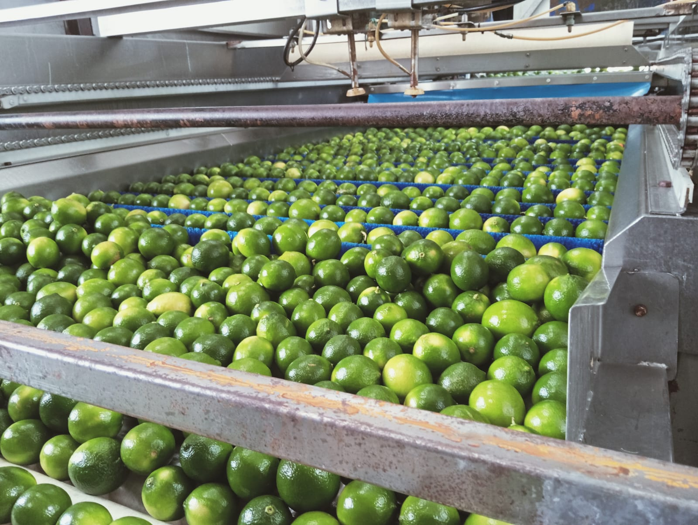

01
Etapa 1 · Lavado
💧 Lavado de la Fruta
Los limones recién cosechados entran a la línea de lavado, donde avanzan sobre rodillos que los hacen girar mientras reciben agua limpia. Así se retiran la tierra, el polvo y los residuos del campo de toda la superficie de la cáscara.
- Agua limpia en circulación
- Rodillos que giran la fruta
- Retiro de tierra y residuos